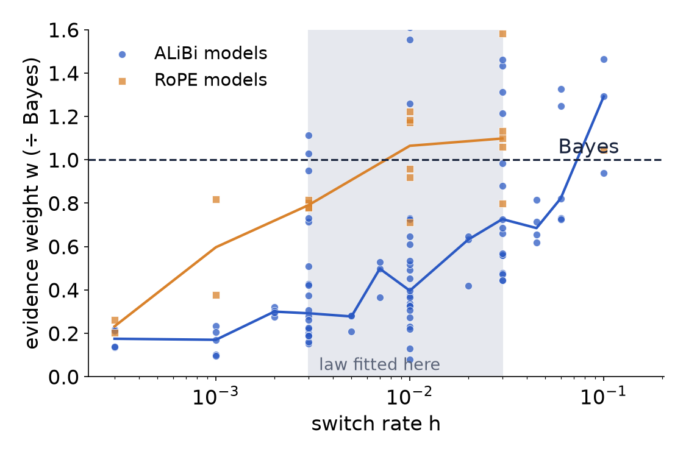
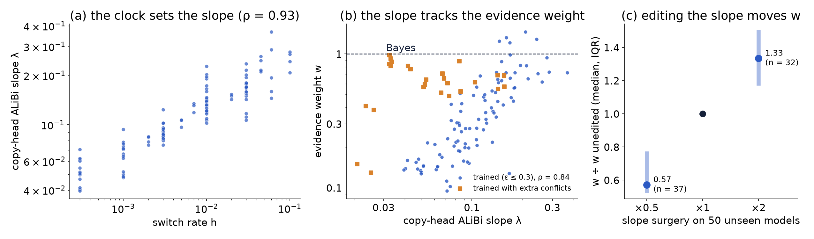

Rescaling the copy heads’ ALiBi slope moves h′ (56 of 57 models). The trained slope is the loss minimum in 85 of 85.
Run 6, 63 new models. Inside its range the frozen law holds (R² 0.89–0.94), and it transfers across context length, vocabulary and number of keys. Outside its range it held at only 1 of 4 settings.
4 / 24
What was left open
Four questions from the talk
1
Is the formula right, and is its derivation right? Derive it again.
2
Where exactly does the formula work?
3
Why does it work inside that region?
4
Why does it fail outside it?
The aim is to understand, not to fit more. 8 rounds of tests; each prediction was written down, with a time, before its result was read.
5 / 24
Question 1 · the derivation, step 1
Every term comes from two rules of the world
Rule 1 · switches, rate h
At each step the value stays the same with chance 1 − h, or switches with chance h to a random one of V = 64 values.
No switch for G steps: (1 − h)·(1 − h)·… = (1 − h)^G = s
At least one switch: 1 − s
A switch lands on one given value: 1/V
Rule 2 · typos, rate ε
Each time the value is shown, it is shown correctly with chance 1 − ε, or as a typo with chance ε. A typo of z always shows z + 1.
A copy of c shows c: 1 − ε
A copy of c shows c + 1: ε
n independent typos in a row: ε^n
These are the rules we used to generate the training data, so Bayes knows them exactly. Everything on the next slides is these numbers multiplied together.
6 / 24
Question 1 · the derivation, step 2
Two stories can explain a probe
n_c copies of c → gap of G pairs → n_w copies of w → which comes next?
We set w = c + 1: exactly what a typo of c looks like. So the w’s are either a real change or typos.
A · nothing changed; the w’s were typos
No switch in the gap: s Each recent w is a typo of c: ε, n_w times
Chance of A ≈ s · ε^(n_w)
B · the value switched to w
A switch, landing on w: (1 − s) · 1/V Each recent w is a clean copy: 1 − ε, n_w times
Chance of B ≈ (1 − s)/V · (1 − ε)^(n_w)
The old copies of c are clean in both stories, so they count the same. Other stories need an extra switch or extra typos, so they are much rarer.
7 / 24
Question 1 · the derivation, step 3
Compare the stories: where are they tied?
Odds = A ÷ B, the odds that the old value c is still true
Time: big when the gap is short. Evidence: ×(1 − ε)/ε per recent copy, ×9 at ε = 0.1.
Set odds = 1 and solve for the gap:
s/(1 − s) = R / V
(the paper’s formula)
At h = 0.01, ε = 0.1: one recent w → switch after ≈ 200 pairs; two → ≈ 55; three → ≈ 8. The old copies dropped out.
8 / 24
Question 1 · the derivation, step 4
The model predicts the next token, and it can be a typo too
Rule 2 again, for the next copy:
Hidden value
next shows c
next shows w
c (chance P(c))
1 − ε
ε
w (chance P(w))
0
1 − ε
(a typo of w shows w + 1, which is neither)
p(next = c) = (1 − ε)·P(c)
p(next = w) = (1 − ε)·P(w) + ε·P(c)
Tie when they are equal:
(1 − ε)P(c) = (1 − ε)P(w) + εP(c)
(1 − 2ε)P(c) = (1 − ε)P(w)
P(c)/P(w) = (1 − ε)/(1 − 2ε)
So the tie is not at odds 1. c leaks some chance to w, so c needs a head start: 1.13 at ε = 0.1, 1.75 at ε = 0.3. Example, ε = 0.3, 60 : 40 for c: next is c 0.42, w 0.46.
9 / 24
Question 1 · the derivation, step 5
Two small corrections, then solve
A switch can land back on c
A switch picks c again with chance 1/V. Then the value is still c, so story A’s chance is s + (1 − s)/V, not just s.
Time part: s·V/(1 − s) → s·V/(1 − s) + 1
The old copies could all be typos
In story B the old value could have been c − 1, with every old copy a typo (c − 1 shows as c): extra chance ε^(n_c).
Evidence part: R → R·(1 + ρ^(n_c)), ρ = ε/(1 − ε)
Odds = [ s·V/(1 − s) + 1 ] ÷ [ R·(1 + ρ^(n_c)) ]. Set it equal to (1 − ε)/(1 − 2ε) from step 4, and solve:
(1 − ε)/(1 − 2ε) · the model predicts the next token (step 4). The biggest one.
− 1 · a switch can land back on c (step 5)
1 + ρ^(n_c) · the old copies could all be typos (step 5)
Conclusions unchanged: old copies don’t matter; each recent copy moves the switch earlier by a fixed step. Only the numbers change, mostly at high ε.
11 / 24
Question 1 · the other formula
The law itself is fitted, not derived
h′ = 1.45 · h^0.74
logit ε′ = −0.35 + 0.44 · logit ε
4 constants fitted to 12 settings: h from 0.003 to 0.03 (one decade), ε from 0.05 to 0.3. Nothing in Bayes predicts these numbers. So the real questions are: where does this summary hold, and why?
12 / 24
Question 2 · how we searched
Freeze the law, train far outside its box, score it
1
Freeze
Same constants as in the paper. No refitting.
2
Train
25 new settings × 2 seeds: h from 0.0003 to 0.15, ε from 0.01 to 0.45. With the old ones, 44 settings.
3
Score
Law error ÷ error of the best Bayes fit to that same model. ×1 = as good as any Bayes belief could be.
Yardstick: inside its own fitting box the law scores about ×1.4, so “works” = ×1.5 or better. Our pre-registered ×1.25 was stricter than the law achieves even where it was fitted; we report both.
13 / 24
Question 2 · the map
The h′ half travels; the ε′ half does not
(a) Green = the law works. A band around the fitted box (dashed); red at high h and high ε.
(b) The h′ formula holds from h = 0.002 to 0.15, a 75× range. Below that, h′ levels off at ≈ 0.01.
(c) The real ε′ falls as h grows (0.33 → 0.09 at ε = 0.1). The law’s ε′ has no h in it.
14 / 24
Question 2 · the answer
Where the law works, and where it fails
Region
Law error (× best fit)
Verdict
h ≈ 0.001–0.045, ε ≈ 0.05–0.25
×1.0–1.5
Works
h ≥ 0.06 (from 0.045 at ε = 0.1)
×2.3–5.1
Fails
ε ≥ 0.35
×3.2–15
Fails badly
ε ≤ 0.02
×1.5–2.8
Fails mildly
h = 0.0003
–
Can’t score: switch points beyond our window
Stable: with a second seed, no setting moves across the edge.
Tilted: higher h needs higher ε. (0.045, 0.2) works; (0.045, 0.1) and (0.03, 0.05) don’t.
15 / 24
Question 3 · the idea
Bayes’s decision has two parts. Measure each one.
log-odds (old : new) = time − evidence
Time: log(1 + sV/(1 − s))
How likely the old value survived the gap. Set by h and G only.
Measured with: one old copy, d pairs back, then the query. No conflict at all.
Evidence: n_w · log((1 − ε)/ε)
How strongly the recent copies say “it changed”. Set by ε and n_w only.
Measured with: how far one extra recent copy moves the switch point.
16 / 24
Question 3 · the time part
Every model’s clock is right
One old copy, d pairs back: how much the model still believes it (dots), against exact Bayes (dashed). Same picture in all 124 models: h 0.0003–0.15, ε 0.01–0.45, three encodings, median error ≤ 0.042.
Including every setting where the law fails.
17 / 24
Question 3 · the evidence part
Recent copies count for less, and h sets how much

w = how far one extra recent copy moves the model’s switch point ÷ how far it moves Bayes’s. w = 1 is Bayes.
h
ALiBi w
≤ 0.001
0.15
0.003
0.30
0.01
0.37
0.03
0.67
0.06
0.73
RoPE: ≈ 1 from h ≈ 0.01, but also low at very low h (0.23).
18 / 24
Question 3 · the answer
Why the law works inside the band
1
The clock is right, so models switch on roughly the right time scale.
2
Recent copies get weight w < 1, and w grows with h.
3
A Bayes fit has no knob for w. Weak evidence can only show up as a larger typo rate ε′, and early switching as h′ > h.
4
Inside the fitting box w stays at about 0.25–0.65, and the law’s ε′(ε) is that average.
The law is a summary of “right clock, under-weighted evidence”, not a mechanism. It holds wherever w stays near its in-box value.
19 / 24
Question 3 · why w follows h in ALiBi
One slope does two jobs

(a) Training sets the copy heads’ slope so the clock is right, so it grows with h (ρ = 0.93, 119 models).
(b) The same slope sets w (ρ = 0.84). Bayes keeps time and evidence apart; ALiBi ties them.
(c) Editing it in 50 unseen models: halve → w ×0.57; double → w ×1.33.
A real cause, but not the whole one: RoPE has no slope, yet its w also drops at very low h.
20 / 24
Question 4 · why it fails outside
At every edge w moves; the clock never does
Edge
What the models do
Why
Status
High h (≥ 0.045–0.06)
Believed typo rate falls (0.09 at ε = 0.1)
Slope and w rise toward 1; the law’s ε′ has no h, so it keeps the in-box value
Explained
Low ε (≤ 0.02)
Recent copies under-counted: 0.3–1.7 nats each vs Bayes’s 1.8–4.2
w only 0.2–0.45 where Bayes’s evidence is strong
Explained
High ε (≥ 0.35)
Over-counted: up to 0.26 nats per copy vs Bayes’s ≤ 0.07; they switch where Bayes never would
The loss barely pins it: two seeds with equal loss give w = 1.26 and 0.08
Direction explained; size varies by seed
Very low h (≤ 0.002)
h′ stops at ≈ 0.01; w is smallest (ALiBi 0.14, RoPE 0.23)
Not the clock. Several causes ruled out (next slide)
Partly explained
21 / 24
Question 4 · the low-h edge
What we ruled out at very low h
Idea
Test
Result
Clock breaks at long gaps
Survival probes to 248 pairs
Clock exact: ruled out
Context too short
2× context (E8)
Switch point ×1.34 / ×1.13: minor
Too few long gaps in training
4.6–9× more (E9, more keys)
×1.07–1.27: ruled out
Undertrained
4× training (E10)
w 0.135 → 0.124: ruled out
Only ALiBi’s slope
RoPE at low h (E11)
RoPE w also low (0.23)
Conflicts rare in training
+10% conflict data (E12)
RoPE 0.23 → 0.48; ALiBi 0.14 → 0.14
Copy heads count by attention
Match the attention of k copies
Gives 11% of the effect: ruled out
Still open: where the network counts recent copies, and why ALiBi’s w at h = 0.0003 stays at ≈ 0.14 under everything we tried.
22 / 24
Honest status
What we predicted in advance, and how it went
Prediction (written before the result)
Verdict
A “switch-point law” predicts the new models’ switch points
Pass (error factor 1.32)
Rarer conflict patterns in training → bigger deviation, on new models
Pass (ρ = 0.66)
w rises with h on models not yet looked at
Pass (ρ = 0.67)
Slope surgery moves w: halve / double
Pass / narrow fail (×1.28 vs ×1.3)
ALiBi’s straight-line distance penalty bends the clock
Fail: clock is right
More conflict data in training removes the deviation
Fail: helps only partly
Context, long gaps or training length set the low-h edge
Fail (all three)
RoPE escapes the low-h drop
Fail (w = 0.23)
Conflict data lifts w at very low h
Fail for ALiBi
Copy heads count recent copies by attention
Fail (11% of the effect)
23 / 24
Summary
Answers to the four questions
1 · Formula and derivation
The logic is right; three terms were missing. The corrected formula is within 0.9% of exact Bayes. The law is a fit, not a derivation.
2 · Where it works
A band at h ≈ 0.001–0.045, ε ≈ 0.05–0.25, tilted toward higher ε at higher h. Stable across seeds.
3 · Why inside
The clock is exact; recent evidence gets weight w < 1 that grows with h. The law averages w over its box.
4 · Why outside
w leaves that average, and the law has no h in ε′. High h and low ε explained; high ε seed-dependent; very low h partly.